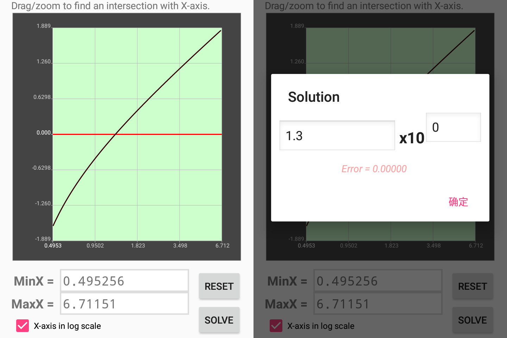

This application solve math equations (of variable x) by bisection method.
To solve equation F(x)=0, input the expression in the text box at the bottom.
x is assumed as unknown variable. Other lowercase letter can be assigned to a constant expression or function of x.
Define all identifier used in the equation, then start plot.

After you click Plot & Solve, the app will plot the equation. Just find one intersection with X-axis and submit to start bisection method.
If the equation has multiple roots, just return to the plot and find another intersection point.